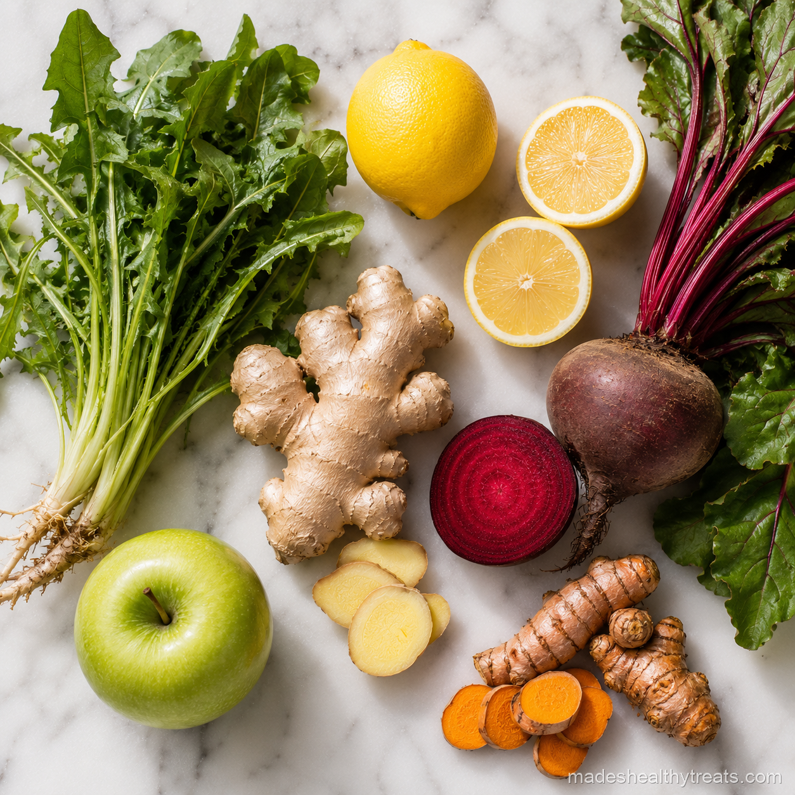

The Truth About Juices Good For Liver Support
When people ask me what juices good for liver support actually look like, I start by clearing the air. Your liver is not dirty. It does not need to be bullied into detoxing by a dramatic green drink. It already works constantly, and our job is to support it with hydration, minerals, antioxidants, and less of the things that make it work overtime.
How The Liver Actually Works
The liver filters, processes, stores, breaks down, and organizes more than we give it credit for. It handles nutrients, hormones, alcohol, medications, and metabolic waste. Juice cannot replace that work, but produce rich drinks can offer supportive compounds from plants.
My Favorite Liver Friendly Ingredients
I reach for lemon, beet, dandelion greens, turmeric, ginger, and green apple. Lemon brightens and hydrates, beet brings deep plant nutrients, turmeric and ginger support inflammation balance, and green apple makes strong greens taste friendly.
My Green Liver Support Juice
For a green version, I blend cucumber, lemon, dandelion greens, green apple, ginger, and water, then strain it until smooth. It tastes bold and clean, like something I drink when I want to feel reset but still nourished.

I have learned that the best wellness habits are the ones that still feel kind on a normal Tuesday morning.
My Beet Ginger Liver Juice
For a deeper juice, I blend beetroot, carrot, lemon, ginger, and apple. This one feels richer and more grounding. It is the juice I make when I want color, minerals, and that ruby red reminder that food can be beautiful medicine without becoming a miracle claim.
What I Avoid
For liver support, I avoid pretending juice cancels out a stressful lifestyle. I also avoid loading every juice with too much fruit. The juices good for liver health in my kitchen are balanced, vegetable forward, and part of a bigger picture that includes water, sleep, movement, and real meals.
Why I Avoid Detox Fear
I avoid detox fear because it makes people feel like their bodies are dirty, and I do not believe that is a helpful way to eat. When I talk about juices good for liver support, I am talking about nourishment, not shame. A lemon ginger beet juice does not erase a weekend, and it does not need to. It simply gives the body water, plants, and a little breathing room. That mindset makes the habit feel supportive instead of frantic.
How Often I Make Liver Support Juice
I make liver support juice a few times a week when I feel like my meals have been heavier or my energy feels slow. I do not force it daily, and I do not use it as punishment. Sometimes I choose beet and ginger, sometimes green apple and dandelion, and sometimes just lemon cucumber water because that is what I have. The best supportive habits are flexible enough to survive real groceries, real schedules, and real moods.
I also like to remember that liver support is not only about what I add. It is also about what I reduce gently, like drinking enough water, taking breaks from alcohol when I need them, getting sleep, and eating enough protein so my body has the building blocks it needs. Juice is one beautiful tool, but the whole routine matters. That truth feels less flashy, and much more freeing.
I also try to keep the language gentle when I talk about liver support. I never want someone to feel like one imperfect meal means they need to cleanse their way back to worthiness. A supportive juice is simply a kind addition. It is not an apology, and it is not a punishment.
You Might Also Like

Does a Smoothie a Day Actually Help You Lose Weight? I Tried It for 30 Days
I replaced my rushed breakfast with one green smoothie every morning for 30 days and tracked what really changed.
Read more →
What Happens to Your Body When You Drink Green Smoothies Every Day
I explain the simple body changes I noticed and the science that makes daily green smoothies make sense.
Read more →
The 7 Biggest Smoothie Mistakes That Are Ruining Your Results
I made these smoothie mistakes myself before I learned how to blend for energy, fullness, and real results.
Read more →Made's Note
Your liver is already on your side. Give it water, plants, rest, and a little less drama, then let your body do what it was designed to do. When I think about juices good for liver, I think about real mornings, real kitchens, and the small choices that help us feel at home in our bodies.